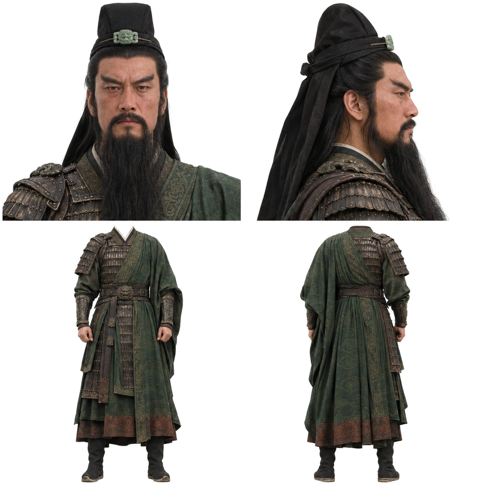
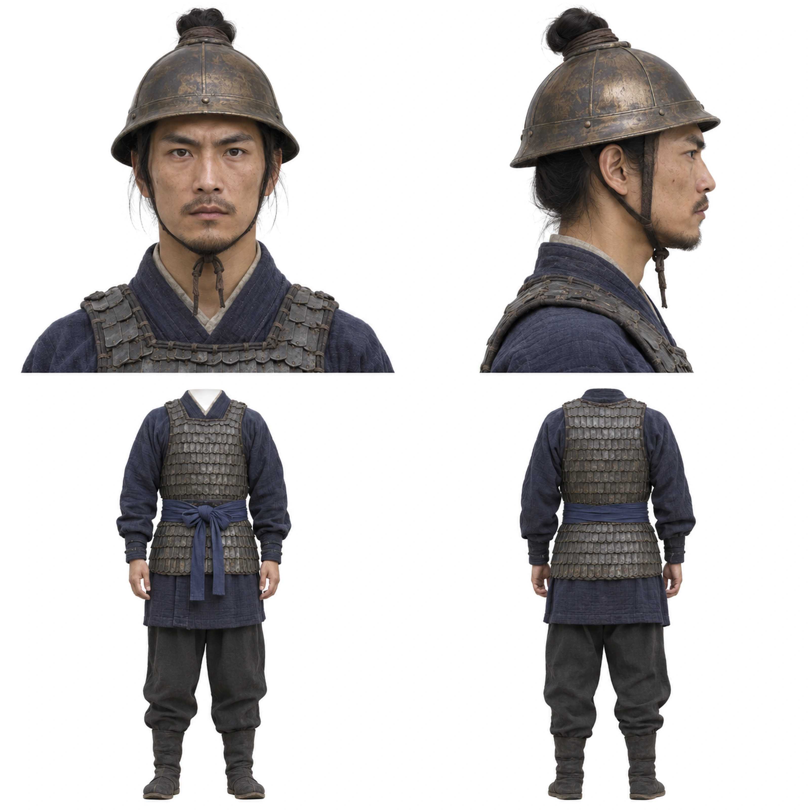
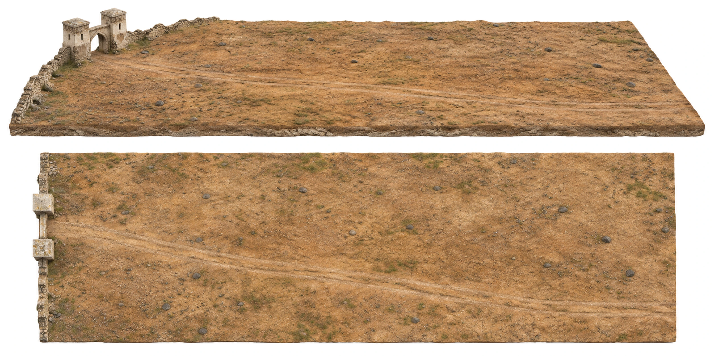
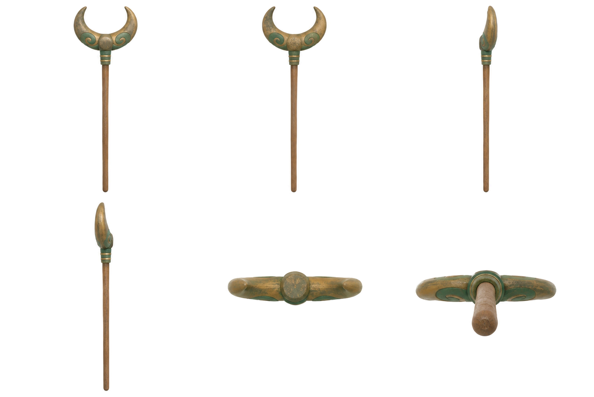
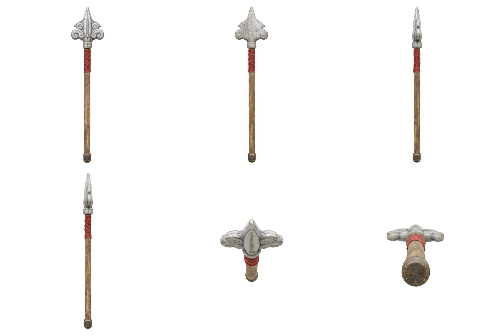
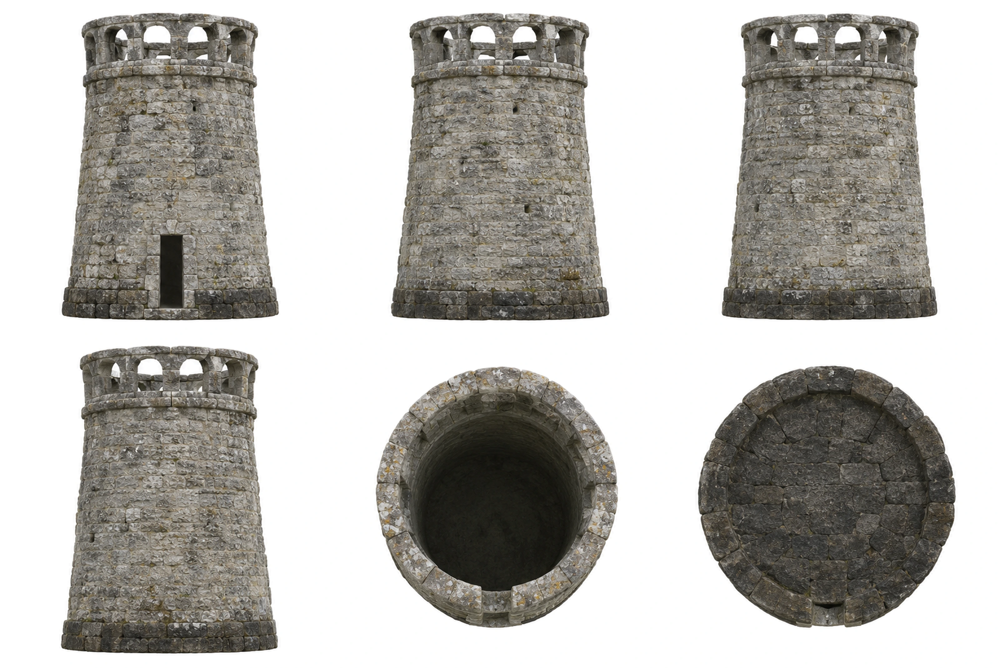

游戏广告
游戏广告
正在连接在线视频…
视频简介
荒沙战场上灰蓝守军与红方兵阵对峙。双方迅速接触，守军由直线变弧阵，红军先形成团块，随后分成多股。镜头追随绿袍守将逼近营门，最终进入失败结算。资产采用原创历史感真人写实造型，画面节奏参考上传成片。
在快手观看原视频 ↗制作资产
角色资产

绿袍守将
源片的中央武将单位。原创真人化造型，承担战线跟随的视线锚点。 墨绿袍叠深铜甲，黑须，整体以厚重织物和旧金属呈现。 成片未完整展示的方位按可见造型补全。
铠甲守卫
浅灰主阵线的防守单位。 灰褐绗缝衣、铜灰甲块、圆锥盔；军阵用同模型复制。 成片未完整展示的方位按可见造型补全。

靛甲辅助兵
浅灰阵线左侧的辅助队列。 暗靛蓝内衫、铁灰甲片，远景靠颜色区分。 成片未完整展示的方位按可见造型补全。
赭红攻方步兵
由右侧成列推进的红阵士兵。 暗红衣、深灰甲、低圆盔；复拍以统一轮廓建立人数。 成片未完整展示的方位按可见造型补全。
场景资产

荒沙营门外
荒沙营门外的场景视觉设定，用于空间布局、光影与镜头背景。
道具资产

守将长柄仪仗道具
木色长柄与青铜色弧形泡棉饰件。 跟随绿袍守将，用于虚构策略广告造型。 成片未完整展示的方位按可见造型补全。
守卫短盾
覆木盾面、皮革束带与握环。 守卫队列面向攻侧时使用，前后手位一致。 成片未完整展示的方位按可见造型补全。

赭红兵木杆道具
木色杆、红色绕把和软质银色冠头。 统一赭红队列剪影的安全替代道具。 成片未完整展示的方位按可见造型补全。

营门小塔
浅灰石砌圆塔，低矮女墙。 置在场地左边，作为残部退近营门的方位标记。 成片未完整展示的方位按可见造型补全。
剧本与分镜
完整剧本与分镜脚本
游戏广告 · 游戏广告 原片时长 27.77 秒 故事梗概 荒沙战场上灰蓝守军与红方兵阵对峙。双方迅速接触，守军由直线变弧阵，红军先形成团块，随后分成多股。镜头追随绿袍守将逼近营门，最终进入失败结算。资产采用原创历史感真人写实造型，画面节奏参考上传成片。 人物 绿袍守将位于两军之间，铠甲守卫、靛甲辅助兵及赭红攻方步兵以队列复用。结算画面仅保留文字描述。 场景 荒沙营门外是一处单连贯场地，左侧营门标识退却方向。 道具用途 仪仗杆、短盾和木杆道具区分角色。营门圆塔在后段入画，用于空间连续。 剧本与分镜 按原片抽帧重建的复拍制作稿。画面未能确认的对白、音效与镜头节奏按下表执行。 | 镜号 | 画面内容 | 镜头视角 | 使用资产 | 动作描述 | 台词/旁白 | 音效 | 单镜头时长 | | 01 | 两侧兵线在沙场上对峙 | 垂直俯视全景 | 荒沙营门外、四类角色、队列道具 | 绿袍守将停在中轴，各列保持间距 | — | 低鼓、沙风 | 3.20秒 | | 02 | 两军接触，密列中段出现缺口 | 俯视跟随中全景 | 铠甲守卫、靛甲辅助兵、赭红攻方步兵 | 两列集中到中部，保持俯视可读性 | — | 鼓点、软道具撞击 | 4.60秒 | | 03 | 守军后撤成弧阵 | 俯视平移 | 绿袍守将、守卫短盾、赭红攻方步兵 | 画面随中央守将向左，队列变弧 | — | 脚步、沙声 | 5.90秒 | | 04 | 红方分出两股，阵形缩小 | 俯视持续跟拍 | 四类角色、荒沙营门外 | 红阵拉成两个团块，颜色保持清楚 | — | 低鼓转急 | 5.00秒 | | 05 | 近营门仅余零散单位 | 俯视中远景 | 绿袍守将、两方散兵、营门小塔 | 残余单位断续擦过，露出营门轮廓 | — | 脚步转稀、长风 | 6.10秒 | | 06 | 画面降暗，进入失败结果 | 固定俯视全景 | 荒沙营门外、营门小塔 | 停住最后位置，以暗场和声音提示结果 | 结果提示：失败。 | 结算下行音 | 2.97秒 | 时长合计 27.77 秒